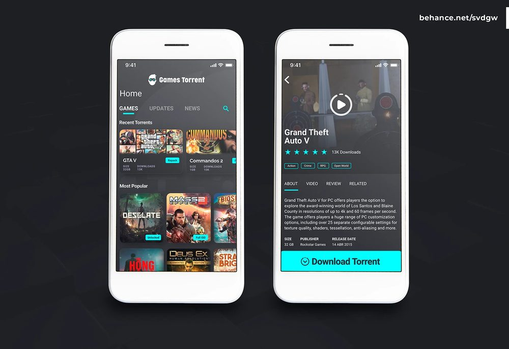
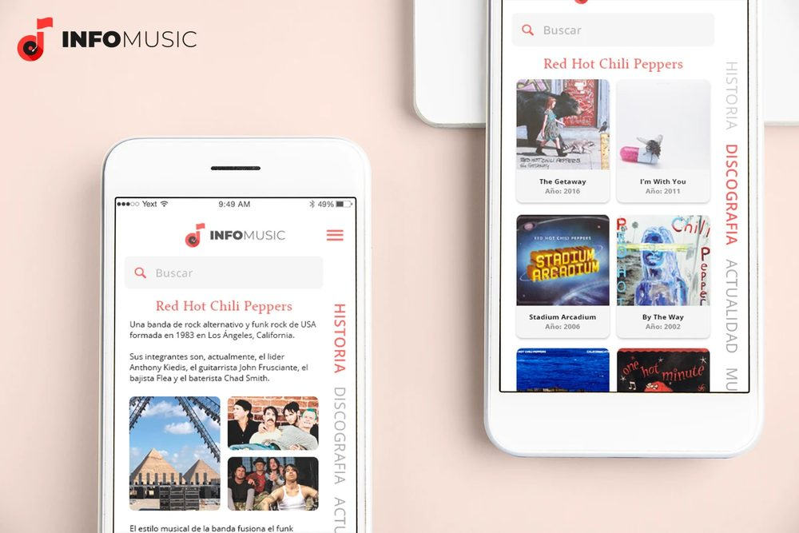
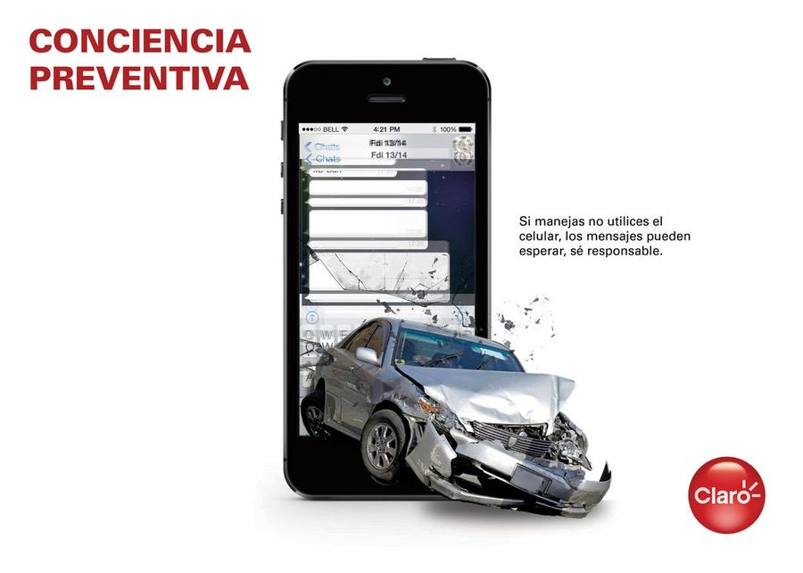
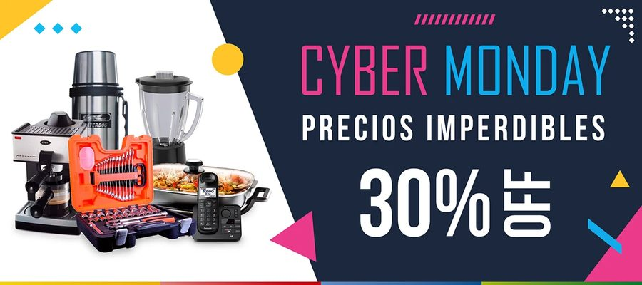

/ Portfolio completo
Todos los proyectos
Sitios, dashboards, catálogos, piezas de marca, social media y 3D. Lo más pulido está en la página principal.
/ Sitios propios
Web & GitHub


/ Piezas y conceptos
De mi Behance

Puma Home_
Concepto de home minimalista para e-commerce.

IrishBakers_
Landing para panadería artesanal.

Don Raúl
Identidad de marca y web de pedidos.

Electric_A
Render 3D explorando tipografía e iluminación.

_social.media
Flyers para Kawasaki Navarro, SYM y UnoMotos.
_videos
Reel de edición: motion, cortes y color.

GamesTorrent_
Concepto de UI para app de videojuegos.

INFO MUSIC_
Concepto de app/sitio sobre discografías.

Publicity_
Pieza publicitaria para Claro.

social.media.ads_
Piezas de campaña para retail.
/ Edición de video
Reel vertical
Cortos de edición (After Effects, Premiere, CapCut). Los voy a ir sumando acá a medida que los suba.
¿Querés el CV en PDF?
La versión completa, para leer tranquilo o guardártela.